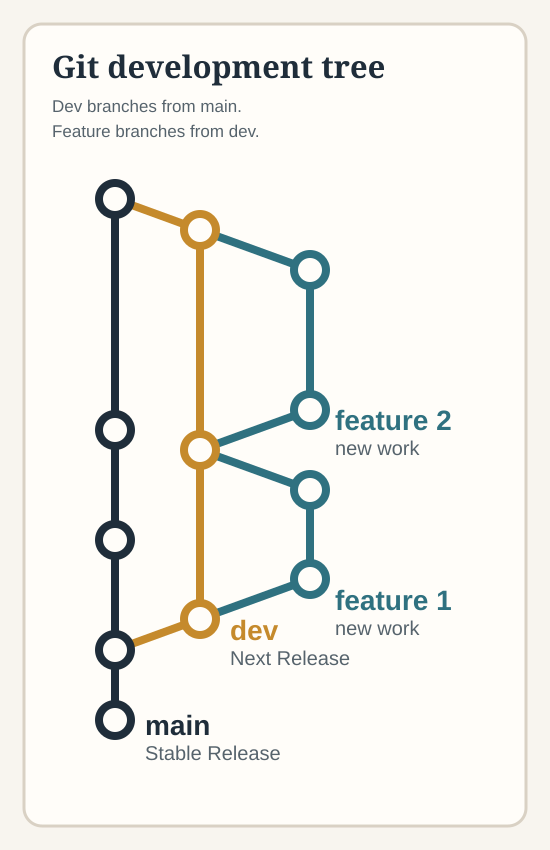

Vibe Coding: Create Apps and Games with AI (8077)
Vern McGeorge
VernMcGeorge@gmail.com
408-256-1849
Until you're in my contacts list, leave a text or voicemail.
Follow along: https://vemcg.github.io/cace-8077/sessions/age-of-exploration/
Press F to toggle full screen
The two immediate "must haves" are:
I use Visual Studio Code and git. I strongly recommend git especially if you are going to allow the AI to help you with it.
Adding an AI Coding partner to your IDE is how you offload most of technical details to AI by allowing the AI to edit your files directly and to interact with other tools such as git.
All four of the AI options listed in the last session (and no doubt many more) offer such integration. The following slides written by each of these AIs list their features, costs, and links to get started.

Git is a version control system that records changes to files so you can experiment, review your history, and return to an earlier working state.
GitHub is an online service for storing Git repositories and collaborating with other people. It adds shared hosting, pull requests, issues, and project coordination around Git.
Text template: Add the key idea, example, or classroom explanation you want students to remember here.
As written by the various companies
Details are subject to change at any time
What it is: A VS Code extension (built on the Claude Code CLI) that lets Claude read, edit, and create files across your whole project — not just answer questions in a chat window.
IDE integration
Beyond the editor
Cost
Get started:
GitHub Copilot is an AI coding partner built into the tools many developers already use. It offers deep integration with VS Code, Visual Studio, GitHub, and Azure, providing inline code suggestions, repo-aware reasoning, pull request help, and command-line workflows.
Copilot can also work with third-party tools through extensions, APIs, GitHub Actions, and cloud deployment hooks. This makes it useful across the development workflow, from writing and understanding code to reviewing changes and deploying applications.
Cost: Copilot Pro is $20/month. GitHub Copilot Enterprise is $39/user/month.
Get started: Get started
A story about keeping your software safe, changing your mind without fear, and sharing your work with the world, without ever typing a scary command.
Maya was building a website called Recipe Box. It kept all her family's favorite recipes in one place: Grandma's pancakes, Dad's chili, and her own cookie experiments. Maya had never written a line of code. She talked to her AI coding partner, and the AI built everything.
One afternoon she typed:
Maya: The page looks great! Can you make the recipe titles bigger and move the search box to the top?
The AI did it. But when Maya refreshed the page, every recipe was gone. The page was empty.
Maya: Oh no! Put it back the way it was ten minutes ago!
AI: I wish I could. I changed several files at once, and I didn't keep a copy of the old ones. I can try to rebuild them from memory, but I might get something wrong. Maya, this is the right moment to tell you about something that will protect you every day you build software. It's called version control.
Maya: Version control? That sounds complicated.
AI: It's easier than it sounds. Have you ever played a video game with a save button? Before the scary boss fight, you save. If the boss wins, you don't start the whole game over. You go back to your save and try again.
Version control is a save button for your whole project. Whenever something is working, we save. Each save keeps a snapshot of every file exactly as it was at that moment. And we never throw old saves away. Over time you collect hundreds of them, lined up like pages in a photo album.
Maya: So I could have gotten my recipes back?
AI: In about ten seconds, if we had been saving. Let's start now.
Here is what Maya learned, in both directions.
If I want to... be able to undo mistakes and change my mind without fear,
...I should ask the AI to: "Set up version control for my project."If I ask the AI to set up version control,
...then this will happen to my software: nothing you can see changes. Your website looks and works exactly the same. The AI just starts keeping a hidden photo album of your project's history.
AI: The tool I'll use is called Git. You say it like "get" with an "i," so "git." It's free, and almost every software team in the world uses it. I run it for you. You never have to touch it.
Maya: What do I need to do?
AI: Just say yes. I'll handle everything.
Maya typed: "Yes, please set up version control for Recipe Box."
AI: Done! Here's what I did, in plain words.
First, I checked that Git was installed on your computer. It was. If it hadn't been, I would have installed it myself, or told you exactly which button to click.
Second, I turned your Recipe Box folder into a repository. That's a fancy word, so here is the real meaning: a repository is a project folder with a photo album attached. The folder holds your files. The album holds every saved version of them. People shorten it to repo. If someone says "send me the repo," they mean "send me the project folder with all its history."
Third, I told Git who is making the saves. Every save is signed with a name and an email address, like writing your name on the back of a photo.
Maya: Where is the album? I don't see anything new in my folder.
AI: I hid it on purpose, so nobody ruins it by accident. It's a folder called
.git, with a dot at the front. Folders that start with a dot are usually invisible. Please never open it, move it, or delete it. If it's deleted, all your history is gone. That would be like throwing the photo album out of the house.If I want to... start keeping a history of my project,
...I should ask the AI to: "Set up version control (git) in this project."
If I ask the AI to do that,
...then this will happen: a hidden.gitfolder appears inside your project. Your real files are untouched. From then on, the AI can save snapshots and bring them back.A warning that goes both ways: if the hidden
.gitfolder is ever deleted or moved, you lose all your saves. If you ask the AI to "start fresh," make sure you truly want to throw away the old history.
AI: Now we take our first picture. In Git, that takes two steps. Imagine packing a suitcase for a trip. First you decide what goes in the suitcase. Second, you zip it shut and stick a label on it.
AI: When I add a file, I'm telling Git, "This file goes in the next picture." The place where files wait for their picture is called the staging area. Picture a bed where you lay out clothes before they go in the suitcase.
Why have this step at all? Because sometimes you've changed ten files, but only three of them belong together. Adding lets me choose just those three, so each picture tells one clear story.
For our very first picture, I'll add everything.
AI: Now I commit. A commit is one saved snapshot in your photo album. It has three things: a copy of all your files as they are right now, a label from me describing what changed, and the date, the time, and the name of who saved it.
The label is called a commit message. A good one is short and says what changed. For example, I'll write: "First version of Recipe Box with a list of three recipes." Months from now, when you hunt for the version where search worked, you'll be glad the labels are clear.
Then the AI showed Maya the album.
AI: Here's your history so far. It has one entry: Today, 4:12 PM. Maya: First version of Recipe Box with a list of three recipes. That picture is safe forever.
Maya: Wait. The recipes are missing right now, remember? Did you save the broken page?
AI: Good catch. I saved what's on screen, which is the empty page. That's why we save good moments. Let me fix the problem first and then save again. Your album will show the broken picture, then the fixed one. Nothing is ever erased.
The AI brought the recipes back. Maya checked the page, and they were all there.
AI: Fixed! I'll save it with the message "Bring back the missing recipes." Now there are two pictures.
If I want to... save my progress at a good moment,
...I should ask the AI to: "Save my work" or "Commit what we have, with a clear message."If I ask the AI to commit,
...then this will happen: a new snapshot is added to the end of the album. Your files do not change. You just gain one more safe spot to return to.
If I want to... see what has happened in my project,
...I should ask the AI to: "Show me my project's history in plain English."If I ask the AI to do that,
...then this will happen: you get a readable list of every save, newest first, with its label, date, and author. Nothing changes. It's like flipping through the album.If I want to... know what I've changed since my last save,
...I should ask the AI to: "Tell me what's changed since my last save."If I ask the AI to do that,
...then this will happen: the AI lists which files are new, edited, or deleted, and can describe the edits in plain English. Nothing changes.
A few days later, Maya added a feature: Recipe Box could show a nutrition label for each recipe. To do that, it had to ask a nutrition service on the internet. The service gave Maya a secret code called an API key.
AI: An API key is like a password that proves to the nutrition company that it's really your app asking. It looks like random gibberish. If a stranger gets it, they can use your account, and sometimes you get charged money for what they do. So it's a secret.
Right now it's stored in a small file called
.env. That's the file I made to hold secrets.Maya: So we save everything, including that file?
AI: No! This is important. Everything in the album stays there forever. Soon we're going to put our album on the internet. If a secret is in the album, other people can see it. So we need a way to tell Git, "Never take pictures of these things." That's the job of a special file called .gitignore.
AI: Imagine a photographer at a party. You hand her a list: "Don't photograph the messy kitchen, and don't photograph the diary on the table." The
.gitignorefile is that list. It's a plain text file, and each line names something Git should pretend isn't there.
There are three kinds of things that usually go on the list:
.env file..DS_Store on a Mac or Thumbs.db on Windows.AI: I'll set up the list now, and I'll add to it whenever a new secret or pile of clutter shows up. To double-check, I asked Git whether it can see the
.envfile. It said no. Your secret is safe from the album.Maya: What if I saved a secret by mistake?
AI: An honest answer: that's harder to fix. Deleting the file isn't enough, because the old picture still has it. The safest thing is to treat the secret as stolen. I'd walk you through canceling that key on the company's website and making a new one. If it ever happens, tell me right away. Don't be embarrassed. It happens to professionals too.
If I want to... keep a password, key, or private file out of my history,
...I should ask the AI to: "Put all my secrets on the ignore list, and double-check that Git can't see them."
If I ask the AI to do that,
...then this will happen: Git skips those files when saving and when sharing. They stay on your computer and keep working, but they never enter the album.A warning in the other direction: ignored files are not in the album, so they are also not protected by it. If your computer dies, those files die with it. Keep a spare copy of important secrets in a password manager.
If I want to... stop my album from filling up with junk,
...I should ask the AI to: "Add the rebuildable files and computer clutter to the ignore list."
If I ask the AI to do that,
...then this will happen: your saves stay small and fast, and your history shows only things that matter.
By Friday, Maya had a shopping list page, a photo uploader, and a print button. And the AI had been saving after every small step.
Maya: You save so much! Wouldn't it be neater to do one big save at the end of the week?
AI: Neater, yes. Safer, no. Let me tell you two stories.
Story one: the bread crumbs. If you walk through a forest dropping a bread crumb every few steps, you're never far from a spot you recognize. If you drop only one crumb at the very end, you're lost the moment something goes wrong. Frequent saves mean that when something breaks, you lose a few minutes of work, not a whole week.
Story two: the detective. Say the print button breaks. If I made a hundred changes in one big save, finding the culprit is like searching a haystack. But if I saved after every little change, I can say, "It worked at save 41 and broke at save 42." Now we know exactly where to look.
Maya: So more saves is better?
AI: The rule of thumb is to save whenever something works and you'd be sad to lose it. I'll do it automatically. You can also say, "Save this, it's perfect," and I'll make a labeled save right then.
If I want to... be able to find exactly when something broke,
...I should ask the AI to: "Save after every small working step."
If I ask the AI to do that,
...then this will happen: your album gets many small pictures. It's easy to find, study, or undo any single change. The only cost is a longer list, which is fine.A warning: if things are broken, tell the AI before it saves. Otherwise the picture captures the broken state. It's not a disaster, since you can always go back further, but the label should say so, like "Search is broken, in the middle of fixing."
On Saturday, Maya had a wild idea.
Maya: Let's make Recipe Box look like an old cookbook! Fancy fonts, a paper background, everything.
AI: Fun! Let's try it.
An hour later, the page was covered in swirly letters and a yellow, speckled background. Maya squinted.
Maya: I can't read it. I changed my mind. Can we go back?
AI: Of course. Because we've been saving, you have choices. There are three different "undo" situations, and I'll explain each one.
AI: This is the simplest. We haven't taken a picture of the old-cookbook look, so the last picture in the album is still the plain version. I can tell Git, "Put every file back the way it looked in the last picture." All the old-cookbook changes disappear.
But be careful: this throws those changes away for good, because they were never in the album. That's why I always ask you first.
If I want to... throw away everything since my last save,
...I should ask the AI to: "Discard all my unsaved changes and go back to my last save."
If I ask the AI to do that,
...then this will happen: your files snap back to the last saved picture. Everything since then is gone and cannot be recovered.
AI: Say we had saved the old-cookbook look and then changed your mind. Git has a clever tool called a revert. I don't erase the old save. Instead, I add a new picture that is the exact opposite. If the old save said "made the background yellow," the new one says "un-made the yellow background."
The nice part is that history is never rewritten. The album tells the truth: we tried something, then undid it. And since nothing is lost, you can change your mind again and bring the old-cookbook look back next month.
If I want to... undo a change I already saved, without losing the record of it,
...I should ask the AI to: "Undo the save called 'Old cookbook makeover,' but keep it in the history."If I ask the AI to do that,
...then this will happen: a new save appears that reverses the old one. Your site goes back to how it looked before. The old save stays in the album.
AI: Sometimes you don't want to undo anything. You just want to peek. Maybe you remember a layout you liked last Tuesday. I can make your project temporarily look like last Tuesday, and when you're done looking, I bring you back to today. It's like borrowing a time machine for a visit.
If I want to... see what my project looked like on a certain day,
...I should ask the AI to: "Show me what the project looked like last Tuesday. Don't change anything permanent. I just want to look."
If I ask the AI to do that,
...then this will happen: your files temporarily look like they did then. As long as we make no new changes, I can return you to the present with nothing lost.
AI: If just one file went bad, I don't need to travel the whole project back in time. I can fetch that file's old version, like pulling one photo out of an old album, and drop it into today's project.
If I want to... get one file back the way it used to be,
...I should ask the AI to: "Bring back the old version of the shopping list page from before this morning. Leave everything else alone."If I ask the AI to do that,
...then this will happen: only that one file changes. The rest of your project is untouched.
Maya: The old-cookbook look was a flop. But I still want a big redesign, with a dark mode and a new menu. I'm scared I'll wreck what works.
AI: That's exactly what branches are for. Think of your favorite recipe card. You love it as it is, so you don't scribble on it. You make a photocopy and try new ingredients on the copy. If the new version tastes better, you copy the improvements onto the original card. If it's a disaster, you throw the photocopy away and the original is exactly as it was.
AI: A branch is a parallel copy of your project where you can experiment safely. The main version, the one you trust and show people, is called the main branch, or just
main. Picture it as the trunk of a tree. A new branch is a limb growing off the trunk, where we can try things without disturbing the trunk.When you say, "Let's try a dark mode," I make a branch called
dark-modeand move your project onto it. Everything I change from then on happens only on that limb. I still save as I go, but those saves belong only to the branch. Meanwhile,mainsits there, safe and unchanged.
AI: When we love what's on the branch, we merge it. To merge means to take everything new from the branch and combine it into
main. It's like copying the improvements from the photocopy back onto the original card. After the merge,mainhas the dark mode, and the album tells the full story.When we don't love it, I delete the branch without merging, and the experiment vanishes.
mainnever knew about it.
AI: Sometimes a merge hits a snag called a conflict. That happens when the very same line of a file was changed two different ways, once on
mainand once on the branch. Git can't guess which one you want, so it stops and asks. It's like two cooks each rewriting the same line of a recipe differently. A person has to pick.When that happens, I'll explain both versions in plain English, like "On main, the title is green. On the branch, it's dark blue," and ask which you prefer. Then I finish the merge. Conflicts sound dramatic, but they're normal and fixable.
Maya tried it. The AI made the dark-mode branch. An hour later:
Maya: I love it! Let's keep it.
AI: Merging... done. Dark mode is part of
mainnow, and I've tidied up the old branch. Your album shows the whole story.If I want to... try a big or risky idea without endangering what works,
...I should ask the AI to: "Make a branch called [name] and do this experiment there."If I ask the AI to do that,
...then this will happen: your main project stays untouched. The experiment lives in its own copy, and you can switch between the two by asking.If I want to... keep an experiment that turned out great,
...I should ask the AI to: "Merge the [name] branch into main."
If I ask the AI to merge,
...then this will happen: the new work joins your main project, so your site will look different afterward. Check it. If there are conflicts, the AI will explain them first.If I want to... throw away an experiment I didn't like,
...I should ask the AI to: "Delete the [name] branch without merging it."If I ask the AI to do that,
...then this will happen: the experiment's changes are gone (and hard to get back), whilemainstays exactly as it was.
A good habit: when you say, "I want to try something," the AI should offer a branch. When you say, "I'm sure, just do it," small changes can go straight onto main.
On Monday, Maya's laptop slid off the couch. The screen flickered and went black.
It was only a pretend disaster the AI had invented to teach her something, but her heart was racing.
Maya: Where is my photo album kept?
AI: On your laptop, in that hidden
.gitfolder.Maya: So if my laptop dies...
AI: ...the album dies with it. Version control protects you from mistakes, but not from a broken computer, a stolen bag, or a spilled drink. The fix is to keep a second copy of the album somewhere far from your laptop. That's where GitHub comes in.
AI: GitHub is a website that stores a copy of your project and its whole album. Think of a big, safe storage locker in the sky, like Google Drive or iCloud but built for software projects. It's free for what we need. A copy stored somewhere else is called a remote. "Remote" simply means "not on this computer."
GitHub does four jobs for you:
AI: I can do almost everything for you, but not this: I can't create your GitHub account. An account is an agreement between a person and a company, and I can't make that agreement for you. It needs your email, your password, and your choices. It takes about ten minutes, and I'll guide you.
Step 1. Open your web browser (Chrome, Safari, Edge, or whichever you use) and go to github.com.
Step 2. Click the "Sign up" button. It's near the top right of the page.
Step 3. Type your email address. Use one you check often, because GitHub will send you messages. Click Continue.
Step 4. Make a password. Choose a long one that's hard to guess. A good trick is to string together four random words, like purple-teapot-staircase-moon. Don't reuse a password from another website. If you have a password manager, let it create and save one.
Step 5. Pick a username. This is your public name on GitHub, and it appears in the web address of your projects. If you choose "maya-bakes," your page will be github.com/maya-bakes. Pick something you'd be happy to show a future employer. If your first choice is taken, GitHub will tell you, and you can try another.
Step 6. Answer the questions. GitHub may ask if you want emails about updates. You can say no. It may also ask you to solve a small puzzle to prove you're human, like rotating a picture. That's normal.
Step 7. Check your email. GitHub sends a short code of six to eight digits. Type it into the GitHub page. This proves the email address is really yours.
Step 8. Choose the free plan. If GitHub offers paid plans, pick the one called Free.
Step 9. Turn on extra protection (strongly recommended). Open your account settings and look for "Password and authentication." Turn on two-factor authentication. That's a double lock: after your password, GitHub also asks for a code from an app on your phone. Even if a thief learns your password, they can't get in. GitHub shows step-by-step instructions on the screen. Write down the backup codes it gives you and keep them somewhere safe, like a notebook in a drawer.
Step 10. Tell the AI your username. When you're done, just type it in the chat.
Fifteen minutes later:
Maya: Done! My username is maya-bakes.
AI: Wonderful! You now own a little piece of the internet. Next, I need permission to act for you.
AI: Right now GitHub doesn't know who I am. I need a permission slip from you saying, "Yes, this helper may use my account." I'll start the process. GitHub will give me a short code, and you'll type it on GitHub's website to approve me. It's a secret handshake between the three of us.
The AI started the process and showed Maya a message:
AI: GitHub gave me a one-time code: AB12-CD34. Here's what you do.
Step 1. Open your browser and go to github.com/login/device.
Step 2. If GitHub asks you to sign in, use the username and password you just made. (If you turned on two-factor protection, it will ask for a code from your phone.)
Step 3. Type the code I gave you, AB12-CD34, into the box. Use capital letters and the dash exactly as shown. Your code will be different from the one in this story, so use the one I give you.
Step 4. Click the green "Authorize" button. GitHub will explain what you're allowing. You're letting me create and update projects on your behalf. That's expected, so it's okay to say yes.
Step 5. Come back here and tell me when you're done.
Maya typed the code and clicked the button.
Maya: It says, "Congratulations, you're all set!"
AI: I see that too. I'm connected. A safety note: that permission slip lets me act as you on GitHub, so only approve it for tools you trust. To cancel it, open GitHub's settings, find "Applications," and remove me. I'll stop working right away.
AI: Now the fun part. First, a choice only you can make: public or private? A public project can be seen by anyone in the world. They can look at it and copy it, but they can't change your version. A private project can be seen only by you and people you invite. You can change this later.
Maya: Private for now.
AI: Good. That's the safe choice. Here's what I'm doing. I'm creating a new, empty project on GitHub called recipe-box. I'm connecting your laptop's project to it. The faraway copy gets a nickname, traditionally origin, which just means "the main faraway copy." Then I push your project up. To push means to send your saves from your laptop to the faraway copy, like uploading photos to a cloud album. Every picture in your album goes up, not just the newest.
Maya opened github.com/maya-bakes/recipe-box and saw all her files, along with the names of every save.
Maya: What about my secret nutrition key? Is it up there?
AI: I checked. It isn't. The ignore list kept it on your laptop. That's the ignore list doing its job.
If I want to... back up my project so a broken laptop can't destroy it,
...I should ask the AI to: "Push my project to GitHub." (Later: "Back up my latest saves to GitHub.")If I ask the AI to push,
...then this will happen: the copy on GitHub is updated to match your laptop. Nothing on your laptop changes. Anyone you've allowed can then see the newest version.Remember: a push only sends saved work. Unsaved changes stay behind. Ask the AI to save first, then push.
A week later, the pretend disaster became real. Maya's hard drive died, and she bought a new laptop.
Maya: I lost everything!
AI: Take a breath. Did we push to GitHub?
Maya: Yes, last night.
AI: Then you've lost almost nothing. Once I'm set up on the new laptop and signed in to your account, I'll clone your project. To clone means to make a complete copy of a GitHub project on your computer, including the entire album. It's called cloning because the copy is identical to the original.
The AI did it. In a minute, Recipe Box was back, with every save from the beginning.
AI: Anything we didn't put on GitHub is gone, including your secret nutrition key, because we kept it out on purpose. I'll help you get a fresh key and make a new
.envfile. That's the price of keeping secrets safe.If I want to... get my project onto a new computer,
...I should ask the AI to: "Clone my recipe-box project from GitHub onto this computer."If I ask the AI to clone,
...then this will happen: a full copy of the project, with its whole history, appears on this computer. Your GitHub copy is untouched. Secrets and ignored files do not come along, so we'll recreate them.
AI: One more word: pull. To pull means to bring updates down from GitHub to your computer. It's the opposite of a push. Say you worked from the school computer yesterday and pushed. Today, your home computer doesn't have that work yet. I pull the latest saves from GitHub, and your home computer catches up.
If I want to... get the latest work from GitHub onto this computer,
...I should ask the AI to: "Pull the newest changes from GitHub."If I ask the AI to pull,
...then this will happen: new saves from GitHub are added to your computer's copy. If you've edited the same lines, the AI may need to sort out a conflict with you first.
A tip: if you work from more than one computer, pull before you start and push after you finish. It's like checking the whiteboard when you arrive and updating it when you leave.
Recipe Box was getting good. Maya's friend Priya wanted to try it.
Maya: Can I let Priya see my project?
AI: Yes, and there are three levels of sharing. Let me explain each one.
AI: If you make the project public, Priya can see it just by visiting its web address. No account needed. She can read it and download a copy, but she can't change your version.
Before going public, I'll do a safety check of the whole album for anything private: secret keys, phone numbers, anything embarrassing. The album keeps everything forever, so anything we ever saved becomes visible. If I find something, we deal with it first.
Public projects should also have two helpful files. A README is the front door. It's a page that explains what your project is and how to use it, and it shows up right on GitHub. I'll write it in friendly language for you to approve. A license is a short legal note about what others may do with your work. Without one, people technically aren't allowed to reuse it. I'll explain the common choices in plain language and let you pick.
If I want to... let anyone in the world see my project,
...I should ask the AI to: "Check my project for anything private, add a README and a license, then make it public."
If I ask the AI to do that,
...then this will happen: everyone can see all your files and your complete history. You can switch back to private later, but anyone who copied it while it was public keeps their copy. Think carefully before going public.
AI: If Priya should be able to change your project, you can invite her as a collaborator. Give me her GitHub username, and I'll send the invitation. She gets an email and has to accept. After that, she can send changes directly. I'd suggest she works on a branch, so you can look over her work before it joins
main.
AI: What if someone you don't know wants to improve your public project? They can't change your copy, and that's a good thing. Instead, they make their own copy on GitHub, called a fork. They change their copy, then send you a polite note: "I made a change. Would you like to add it?" That note is called a pull request.
Think of it as a suggestion box. You read the idea, then click one button to accept or another to say no thanks. Nothing in your project changes until you say yes. Priya can use the same method with a branch: she opens a pull request asking, "Please merge my branch into main." You look first. It's how most teams in the world work together.
If I want to... control what changes join my project,
...I should ask the AI to: "Show me the pull request from Priya and explain in plain language what it changes."
If I ask the AI to do that,
...then this will happen: you get a summary only. Nothing changes. When you're happy, say, "Accept it," and the AI merges the change intomain.If I want to... suggest an improvement to someone else's public project,
...I should ask the AI to: "Fork this project and suggest this improvement to the owner."If I ask the AI to do that,
...then this will happen: a copy appears under your account, your change goes there, and a request goes to the owner. Their project changes only if they accept.
Months later, Maya had a rhythm. Here's what a normal session looked like.
Maya: Good afternoon! Please pull the latest changes from GitHub, in case I did anything from another computer.
AI: Pulled. You're up to date. What shall we work on?
Maya: A "Recipe of the Week" section. It's a big idea and I'm not sure I'll like it.
AI: Perfect for a branch. I'll call it
recipe-of-the-weekand work there somainstays safe. I'll save after each small step.Maya: Hmm, I don't love the layout. Go back to before you added the big photo.
AI: Done. I undid that last save, and the history remembers we tried it.
Maya: That's it! I love it!
AI: Great. I'll merge it into
main, tidy up the branch, and push to GitHub so it's backed up. All done. You have twelve new saves and a new feature.
Maya's teacher asked for a one-page summary. Here it is. Keep it handy.
| If I want to... | I ask the AI to... |
|---|---|
| Start keeping a history | "Set up version control in this project." |
| Save my progress | "Save my work with a clear label." |
| See what changed since my last save | "Tell me what's changed since my last save." |
| See my project's history | "Show me the history in plain English." |
| Keep secrets and junk out | "Put my secrets and clutter on the ignore list." |
| Throw away unsaved changes | "Discard everything since my last save." |
| Undo a saved change | "Undo the save called [name], but keep it in the history." |
| Peek at an old version | "Show me the project as it looked on [day]. Don't change anything." |
| Recover one old file | "Bring back the old version of [file]." |
| If I want to... | I ask the AI to... |
|---|---|
| Try something risky safely | "Make a branch for this experiment." |
| Keep a good experiment | "Merge that branch into main." |
| Abandon a bad experiment | "Delete that branch without merging." |
| Back up to the internet | "Push my project to GitHub." |
| Set up a new computer | "Clone my project from GitHub." |
| Get the latest from GitHub | "Pull the newest changes." |
| Let anyone look | "Check for private stuff, add a README and a license, then make it public." |
| Let a friend help | "Invite [username] as a collaborator." |
| Review a suggestion | "Show me the pull request and explain it simply." |
| If I ask the AI to... | Then this happens to my project... |
|---|---|
| Set up version control | A hidden .git folder appears. Nothing visible changes. |
| Save (commit) | A new snapshot is added. Your files stay the same. |
| Show history or changes | You get a report only. Nothing changes. |
| Add something to the ignore list | Git stops tracking it. It stays on your computer but is never saved or backed up. |
| Discard unsaved changes | Files snap back to the last save. The discarded work is gone for good. |
| Revert a save | A new save reverses the old one. The old save stays in history. |
| Look at an old version | Files temporarily look old. You switch back when you're done. |
| Make a branch | A parallel copy appears for experiments. Main is untouched. |
| If I ask the AI to... | Then this happens to my project... |
|---|---|
| Merge a branch | The branch's work joins main. Your project changes. |
| Delete a branch without merging | The experiment is thrown away. |
| Push | GitHub gets your latest saved work. Your laptop is unchanged. |
| Pull | Your computer gets the latest work from GitHub. |
| Clone | A complete copy appears on this computer. |
| Make the project public | Anyone can see everything, including old history. |
Months later, Maya showed her little brother Recipe Box. He asked how she'd built it.
Maya: I didn't write the code. My AI partner did. My job was knowing what I wanted, trying bold ideas, and saying "undo that" when I changed my mind.
Brother: What if the AI messes up?
Maya: Then we go back to the last good picture. That's the best part. I'm never afraid to try something, because I can always get back to a time when everything worked.